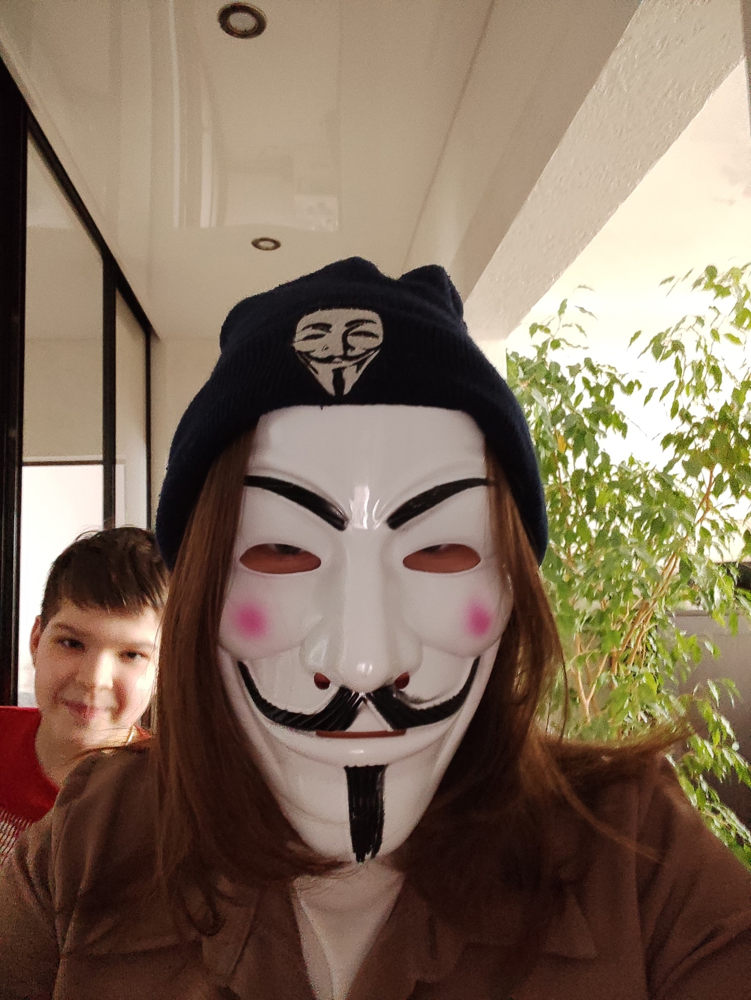

 Всем привет! Я рада, что вы посетили этот сайт, который посвящён мне. На этом сайте я расскажу о себе: что мне нравится, какие блюда я предпочитаю, где я учусь, мои увлечения, мои любые игры и т.д.
Этот сайт будет преображаться по мере выполенения лабораторных работ по предмету ПССИП. Ольга Ивановна будет наблюдать за постепенным развитием данного веб-сайта.